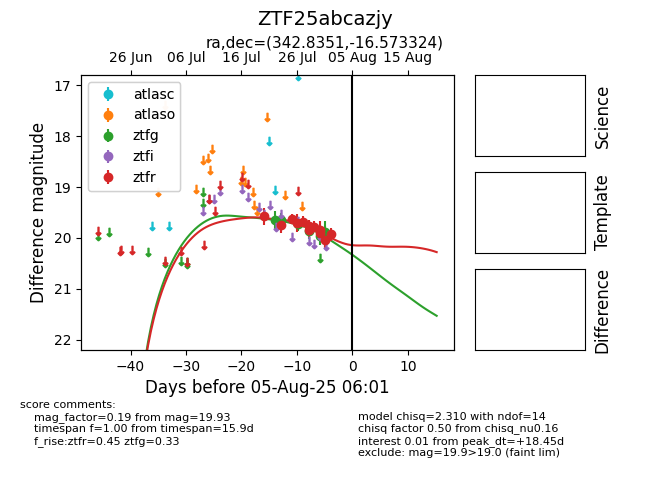

Target ZTF25abcazjy at 2025-08-05 06:01, see:
FINK: fink-portal.org/ZTF25abcazjy
Lasair: lasair-ztf.lsst.ac.uk/objects/ZTF25abcazjy
ALeRCE: alerce.online/object/ZTF25abcazjy
alt names
ZTF25abcazjy (ztf,fink)
coordinates:
equatorial (ra, dec) = (342.8351,-16.57332)
galactic (l, b) = (47.4884,-60.29819)
photometry
last ztfg=19.88, ztfr=19.93
7 ztfg, 12 ztfr detections
